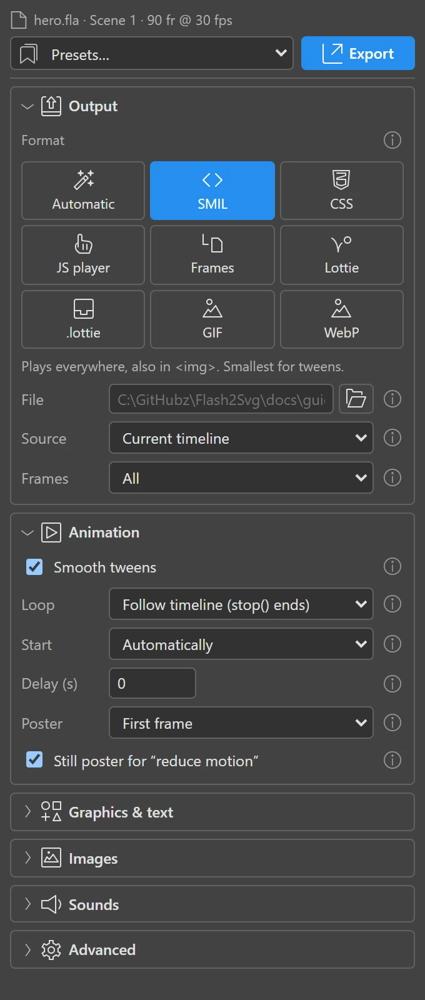
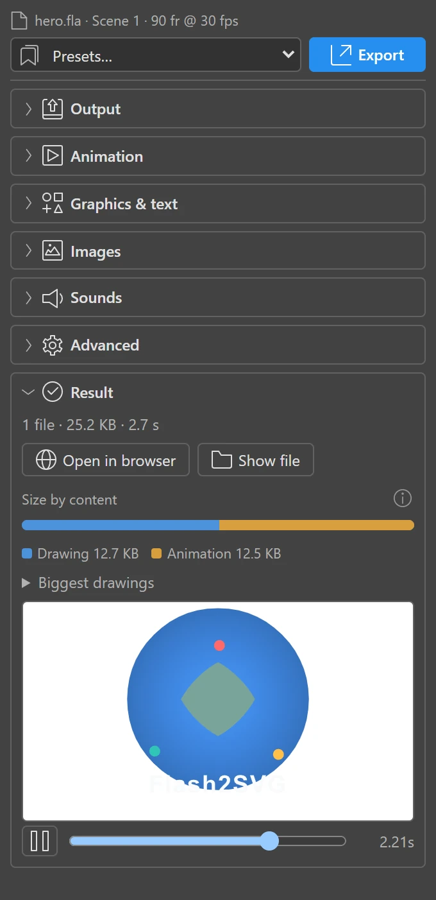

Your first export
This takes about a minute. You need Animate with the panel installed and any FLA with an animation — ActionScript 3 or HTML5 Canvas.
1. Open the panel and your document
Open the FLA, then Window › Extensions › Flash2SVG (SVG Animation). The panel shows the document's name at the top and its settings below, in sections you can fold.

Go to the timeline you want to export — the main timeline of a scene, or a symbol you are editing. Source: Current timeline exports exactly what you see there.
2. Pick a format
In Output, choose how the SVG should animate. If you are unsure, take SMIL: it plays everywhere, even as a plain <img>. The formats page compares them all.
| If the animation… | choose |
|---|---|
| just plays (a hero, an icon, a logo) | SMIL — or Automatic to let Flash2SVG pick |
| has buttons, sounds or code snippets | JS player |
| goes into an app (iOS, Android, Flutter) | Lottie or .lottie |
| goes into an e-mail | GIF or WebP |
Leave the file name empty to save next to the FLA (hero.fla → hero.svg), or type a path.
3. Export
Press Export. The panel copies your document (your FLA is never changed), reads the timeline, and writes the file. A bar shows the progress; Cancel stops it.
When it is done, the Result section shows a preview you can play and scrub, the file size, and what the size is made of:

- Open in browser shows the file in your default browser.
- Show file opens its folder.
- The coloured bar splits the size into Drawing, Animation, Images, Sounds, Fonts, the Player script and Linked files (written next to the SVG); hover a part for its exact size. Biggest drawings names the symbols worth simplifying first — see Performance.
- Warnings list what could not be reproduced exactly, and why. Each is worth a look.
4. Put it on a page
An SMIL or CSS file works like any image:
<img src="hero.svg" alt="Our product in motion" width="640" height="360">The JS player needs a document of its own, so use <object> (or paste the SVG into the page):
<object data="hero.svg" type="image/svg+xml" width="640" height="360">Our product in motion</object>Embedding covers the other ways, sizes that follow the page, and fallbacks.
What next
- Save your choices as a preset (bottom of Advanced), or tick Remember settings in the FLA.
- Make it start on a click, on hover, when visible or with the scroll.
- Make it smaller: Performance.
- Export without Animate next time: tick Keep the scene data and use the command line.